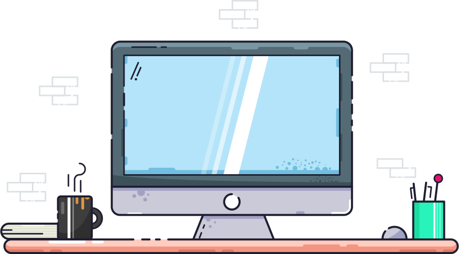

About me
Hi there! I am Sandipan, a software developer and open source enthusiast.
Experience
Software Engineering Intern
The Linux Foundation
Sep 2022 - Nov 2022
Selected as a mentee in the Linux Foundation Mentorship Program where I accomplished the following:
- Worked on improving the security posture of Cilium, a CNCF project
- Implemented security features like image signing, generating Software Bills of Materials (SBOM)
- Contributed to the efforts to bring the CLOMonitor score of Cilium to 100. CLOMonitor is a tool that periodically checks open-source project repositories to verify they meet certain project health best practices
Education
RCC Institute of Information Technology
2019 - 2023 (expected)
Bachelor of Technology - B.Tech · Information Technology
Projects
Cilium
I tried to enhance Cilium's security posture by adding the following features to the project:
- Implemented signing of Cilium and Tetragon container images using cosign
- Generating Software Bills of Materials (SBOM) for Cilium and Tetragon container images using bom
- Automating container image signing and SBOM generation
- Aided in the endeavour of the Cilium community to reach a CLOMoitor score of 100
Tools and Technologies: Go, GitHub Actions, Kubernetes, Docker, Security
Volunteer Experience
Mentee
Kubernetes
Sep 2021 - Nov 2021
- Part of the community manager group mentoring cohort under the Contributor Experience Special Interest Group in the Kubernetes community
Member
Kubernetes
Nov 2021 - Present
Members are continuously active contributors in the community. They have made multiple contributions to the project or community. Contribution may include, but is not limited to contributing to SIG, subproject, or community discussions (e.g. meetings, Slack, email discussion forums, Stack Overflow).
Skills & Interests


Contact